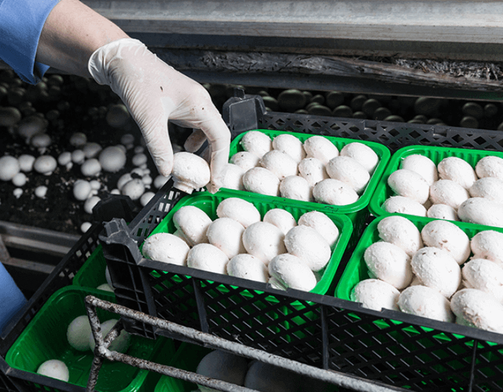
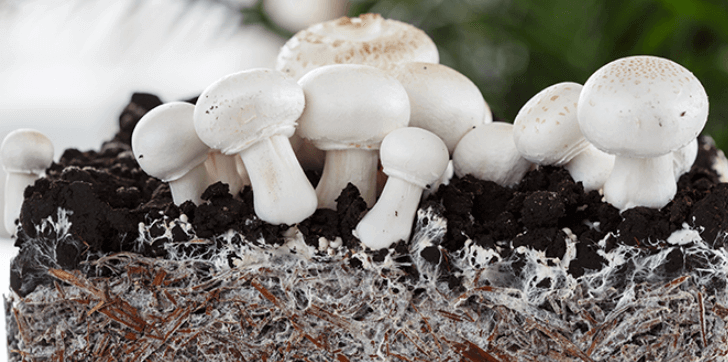

Sterowanie mikroklimatem
Projektowanie i montarz systemów sterowania mikroklimatem, oraz rejestracji danych.
- Nowoczesna uprawa pieczarek wymaga od producentów zapewnienia jak najwyższej jakości tych smacznych grzybów, a to z kolei przekłada się na konieczność stosowania zdecydowanie lepszego i niestety droższego podłoża, co w rezultacie ma wpływ na ostateczną cenę produktu. Rozwój produkcji pieczarek w Polsce sprawił, że wzrasta konkurencyjność i poszukiwanie jak najlepszych metod ukierunkowanych na obniżenie kosztów produkcji. Maksymalna oszczędność energii koniecznej do stworzenia wymaganego przez pieczarkę mikroklimatu to priorytet, który przyświeca polskim pieczarkarzom. Odpowiednie zaprogramowanie parametrów w systemie sterowania mikroklimatem pozwala na pełną kontrolę uprawy w każdej jej fazie.
- Sterowanie klimatem – W pieczarkarni sterowanie klimatem odbywa się za pomocą specjalistycznego sterownika mikroklimatu, który ma za zadanie utrzymanie warunków optymalnych w każdej fazie produkcji pieczarki. Sterowanie temperaturą i wilgotnością w hali odbywa się na podstawie pomiaru z czujników temperatury hali (suchego i mokrego). Pomiar CO2 może odbywać się indywidualnie dla każdej hali lub w systemie zbiorczym. Sterownik mikroklimatu poprzez zastosowany algorytm steruje urządzeniami wykonawczymi w zakresie: ogrzewania, chłodzenia, nawilżania i odpowiedniej wentylacji pomieszczeń produkcyjnych i obsługi. Sterowanie bezpieczeństwem produkcji odbywa się automatycznie z centralnego komputera lub poprzez nadzór z wykorzystaniem GSM telefonu, lub tabletu. Wszystkie parametry uzyskiwane poprzez stałą analizę systemu sterowania mikroklimatem procesu produkcji są automatycznie zapisywane, co pozwala na monitorowanie i ewentualne przeprowadzenie odpowiedniej korekty zadanych parametrów.
- Niewątpliwą zaletą sterownika klimatu jest regulacja urządzeniami wykonawczymi w sposób umożliwiający dokonanie optymalizacji kosztów związanych z produkcją pieczarek. Do tego celu wykorzystuje się zewnętrzną stację meteo. A pomiary przez nią zebrane pozwalają na dokonanie odpowiedniej regulacji wspomnianych urządzeń wykonawczych w celu uzyskania takich parametrów pracy, które przełożą się na najbardziej opłacalną produkcję. Biorąc pod uwagę skalę upraw pieczarki w Polsce oraz wysoką jakość, jaka jest wymagana od producentów, nie byłoby to możliwe bez zaawansowanej technologii.
Dobór sterowania mikroklimatem oraz sposób wykonania instalacji ukierunkowany indywidualnie do każdego klienta ma kluczowy wpływ na efektywne użytkowanie, oraz niezawodność systemu. Oferta ZUEA AUTOMATYKA daje możliwość wyboru systemu sterowania klimatu optymalnie dobranego do potrzeb obiektu w celu utrzymania wysokich plonów i jakości pieczarki.
- W ramach oferty ZUEA AUTOMATYKA:
sterowanie klimatem w pieczarkarni

Zadbaj o właściwą wilgotność i temperaturę w pieczarkarni
Zakup pieczarek w supermarkecie jest łatwy, jednakże ich produkcja to komplikowany proces, który musi być właściwie zoptymalizowany. Przedsiębiorca, który prowadzi działalność polegającą na produkcji pieczarek musi zadbać o odpowiednie warunki, dzięki którym grzyb będzie gotowy do zbioru, transportu, sprzedaży, aż wreszcie trafi do klienta. Wymagania podczas produkcji pieczarek są związane z zapewnieniem im właściwego klimatu. Specjalnie przystosowane do tego miejsca mają właściwie zoptymalizowany mikroklimat, który sprzyja wzrostowi pieczarek i korzystnym zbiorom. W naszej ofercie znajdą Państwo systemy odpowiedzialne za sterowanie klimatem w pieczarkarni. Głównym obszarem naszych działań jest Wielkopolska.
Sterowanie klimatem w pieczarkarni – Wielkopolska
WMikroklimat pieczarkarni skupia się wokół trzech czynników: temperatury, wilgotności oraz zawartości dwutlenku węgla wewnątrz miejsca uprawy pieczarek. Istotna jest nie tylko temperatura powietrza, ale również właściwa temperatura kompostu i jej optymalne nawodnienie. Ręczne monitorowanie tych aspektów wymaga zaangażowania i dużej ilości poświęconego czasu. Wychodząc naprzeciw oczekiwaniom klientów oferujemy sterownik mikroklimatu specjalistyczny regulujący mikroklimatem w każdej fazie uprawy pieczarek.
System nawilżania-chłodzenia powietrza
Sterownik mikroklimatu do uprawy pieczarek – Wielkopolskai
W ofercie znajdą Państwo nowoczesne i wydajne sterowniki mikroklimatu. Ich wykorzystanie umożliwi spełnienie odpowiednich wymogów technologicznych, które pozwolą realizować zamierzone cele sprzedażowe. W przypadku standardowych rozwiązań bardzo wielu przedsiębiorców mierzy się z kolosalnym zużyciem energii niezbędnej do zasilania urządzeń wentylacji i klimatyzacji.
Technologicznie zaawansowane rozwiązania pozwalające na sterowanie klimatem skutecznie minimalizują straty, a w konsekwencji maksymalizują zyski. Zastosowany algorytm, który odpowiada za pracę sterownika jest niesamowicie inteligentnym systemem, który dopasowuje się do Państwa indywidualnych potrzeb
.
System nawilżania-chłodzenia powietrza

- Nowoczesna uprawa pieczarek wymaga od producentów zapewnienia jak najwyższej jakości tych smacznych grzybów, a to z kolei przekłada się na konieczność stosowania zdecydowanie lepszego i niestety droższego podłoża, co w rezultacie ma wpływ na ostateczną cenę produktu. Rozwój produkcji pieczarek w Polsce sprawił, że wzrasta konkurencyjność i poszukiwanie jak najlepszych metod ukierunkowanych na obniżenie kosztów produkcji. Maksymalna oszczędność energii koniecznej do stworzenia wymaganego przez pieczarkę mikroklimatu to priorytet, który przyświeca polskim pieczarkarzom. Odpowiednie zaprogramowanie parametrów w systemie sterowania mikroklimatem pozwala na pełną kontrolę uprawy w każdej jej fazie.
- Sterowanie klimatem – W pieczarkarni sterowanie klimatem odbywa się za pomocą specjalistycznego sterownika mikroklimatu, który ma za zadanie utrzymanie warunków optymalnych w każdej fazie produkcji pieczarki. Sterowanie temperaturą i wilgotnością w hali odbywa się na podstawie pomiaru z czujników temperatury hali (suchego i mokrego). Pomiar CO2 może odbywać się indywidualnie dla każdej hali lub w systemie zbiorczym. Sterownik mikroklimatu poprzez zastosowany algorytm steruje urządzeniami wykonawczymi w zakresie: ogrzewania, chłodzenia, nawilżania i odpowiedniej wentylacji pomieszczeń produkcyjnych i obsługi. Sterowanie bezpieczeństwem produkcji odbywa się automatycznie z centralnego komputera lub poprzez nadzór z wykorzystaniem GSM telefonu, lub tabletu. Wszystkie parametry uzyskiwane poprzez stałą analizę systemu sterowania mikroklimatem procesu produkcji są automatycznie zapisywane, co pozwala na monitorowanie i ewentualne przeprowadzenie odpowiedniej korekty zadanych parametrów.
- Niewątpliwą zaletą sterownika klimatu jest regulacja urządzeniami wykonawczymi w sposób umożliwiający dokonanie optymalizacji kosztów związanych z produkcją pieczarek. Do tego celu wykorzystuje się zewnętrzną stację meteo. A pomiary przez nią zebrane pozwalają na dokonanie odpowiedniej regulacji wspomnianych urządzeń wykonawczych w celu uzyskania takich parametrów pracy, które przełożą się na najbardziej opłacalną produkcję. Biorąc pod uwagę skalę upraw pieczarki w Polsce oraz wysoką jakość, jaka jest wymagana od producentów, nie byłoby to możliwe bez zaawansowanej technologii. Dobór sterowania mikroklimatem oraz sposób wykonania instalacji ukierunkowany indywidualnie do każdego klienta ma kluczowy wpływ na efektywne użytkowanie, oraz niezawodność systemu. Oferta ZUEA AUTOMATYKA daje możliwość wyboru systemu sterowania klimatu optymalnie dobranego do potrzeb obiektu w celu utrzymania wysokich plonów i jakości pieczarki.
- W ramach oferty ZUEA AUTOMATYKA:
sterowanie klimatem w pieczarkarni
Zakup pieczarek w supermarkecie jest łatwy, jednakże ich produkcja to komplikowany proces, który musi być właściwie zoptymalizowany. Przedsiębiorca, który prowadzi działalność polegającą na produkcji pieczarek musi zadbać o odpowiednie warunki, dzięki którym grzyb będzie gotowy do zbioru, transportu, sprzedaży, aż wreszcie trafi do klienta. Wymagania podczas produkcji pieczarek są związane z zapewnieniem im właściwego klimatu. Specjalnie przystosowane do tego miejsca mają właściwie zoptymalizowany mikroklimat, który sprzyja wzrostowi pieczarek i korzystnym zbiorom. W naszej ofercie znajdą Państwo systemy odpowiedzialne za sterowanie klimatem w pieczarkarni. Głównym obszarem naszych działań jest Wielkopolska.
Sterowanie klimatem w pieczarkarni – WielkopolskaWMikroklimat pieczarkarni skupia się wokół trzech czynników: temperatury, wilgotności oraz zawartości dwutlenku węgla wewnątrz miejsca uprawy pieczarek. Istotna jest nie tylko temperatura powietrza, ale również właściwa temperatura kompostu i jej optymalne nawodnienie. Ręczne monitorowanie tych aspektów wymaga zaangażowania i dużej ilości poświęconego czasu. Wychodząc naprzeciw oczekiwaniom klientów oferujemy sterownik mikroklimatu specjalistyczny regulujący mikroklimatem w każdej fazie uprawy pieczarek.
System nawilżania-chłodzenia powietrzaW ofercie znajdą Państwo nowoczesne i wydajne sterowniki mikroklimatu. Ich wykorzystanie umożliwi spełnienie odpowiednich wymogów technologicznych, które pozwolą realizować zamierzone cele sprzedażowe. W przypadku standardowych rozwiązań bardzo wielu przedsiębiorców mierzy się z kolosalnym zużyciem energii niezbędnej do zasilania urządzeń wentylacji i klimatyzacji.
Technologicznie zaawansowane rozwiązania pozwalające na sterowanie klimatem skutecznie minimalizują straty, a w konsekwencji maksymalizują zyski. Zastosowany algorytm, który odpowiada za pracę sterownika jest niesamowicie inteligentnym systemem, który dopasowuje się do Państwa indywidualnych potrzeb .
System nawilżania-chłodzenia powietrza